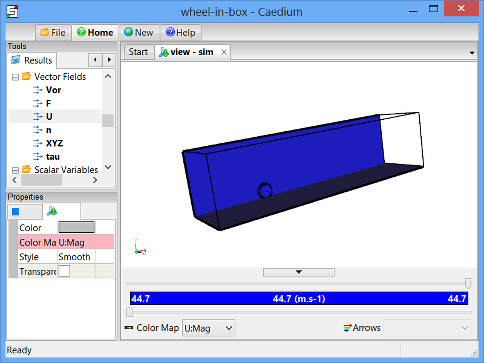

Flow Over a Rotating Wheel with Moving Ground
Simulate an incompressible, steady-state, turbulent flow over a rotating wheel with a moving ground plane. View velocity vectors and velocity magnitude color maps, and monitor lift and drag forces.
Goals
In this tutorial, you will learn how to:
- Specify fluid conditions on a single volume for an incompressible, steady-state, turbulent flow simulation
- Set relaxation factors
- Specify boundary conditions on faces
- Use a linear velocity condition to simulate a moving ground plane
- Use an angular velocity condition to simulate a rotating wheel
- Specify meshing parameters
- Generate a velocity magnitude color map
- Generate velocity vectors
- Create a lift and drag force monitor
- Monitor residuals to determine flow simulation convergence
Assumptions
- You have activated the Caedium RANS Flow add-on, or Caedium Professional.
- You are familiar with Caedium essentials.
- You have either:
- Created the geometry for this tutorial by following the "Wheel in a Box" tutorial
- Imported the geometry (wheel-in-box.brep) into Caedium — select the File Toolbar and click the Import button

The geometry within Caedium should appear as shown below.
Prepare the Volume
Right-click on the View Window background, double-click sim->Volumes in the Select dialog and then select Properties from the menu. In the Properties Panel, select the Volume tab  and set the Name to flow-volume.
and set the Name to flow-volume.
To shade the geometry faces, right-click on the View Window (view) background, double-click sim->Faces, and then select Properties from the menu. In the Properties Panel, turn off the Transparent property to make all faces visible (shaded).
Shading the faces in the simulation will make it easier to select them when you configure fluid and boundary conditions.
Specify the Substance Settings
Specify the Fluid Conditions
Select the Physics Tool Palette. Select Gases->Air. The Properties Panel will show the default properties for air. To enable incompressible turbulent (viscous) flow, the State->Rotational and State->Viscous properties should be set to Yes (their default values), and the State->Compressible, State->Heat Transfer, State->Species, and State->Transient properties should to be set to No (their default values).
Drag and drop the Air tool onto a face of the volume. Select Done to set air as the fluid inside the volume.
Set the Reference Velocity for the Simulation
The reference velocity can be used to initialize the simulation and to specify the inlet velocity. In this tutorial you will set a reference velocity of 44.7 m/s (100mph) in the X-direction.
With the volume already selected from the previous step, the Properties Panel will show the Substance: Air properties by default. Set Substance: Air->Properties->Phase: Single->Reference->U: Fixed Value->Value to be [44.7 0 0] and press Enter on the keyboard.
Set the Relaxation Factors for the Simulation
Changing the default pressure/density relaxation factor in this example will help the simulation to converge more quickly. See "Relaxation Factors in RANS Flow Solvers" for tips on setting relaxation factors.
In the Properties Panel, expand the Substance: Air->Solver: RANS Flow->Relaxation Factors property, and then set p/rho to be 0.7.
Specify the Boundary Conditions
Wall Conditions
Drag and drop the Faces->Wall tool onto a face of the volume. Double-click flow-volume->Faces in the Select dialog and select Done to create walls on the outer surfaces of the volume.
A wall is a solid surface through which fluid cannot flow.
Symmetry Local Condition
To create the symmetry condition, drag and drop the Faces->Symmetry Local tool onto the symmetry face shown below. Double-click the first face in the Select dialog, and select Done.
The Symmetry Local tool can be applied to any planar face. The Symmetry tool applies to the entire simulation and is useful for visualization.
Slip Conditions
To create the 2 slip conditions, drag and drop the Faces->Slip tool onto one of the faces shown below. Double-click the first face in the Select dialog, then select Select/Deselect and right-click on the second face (shown below). Double-click the first face in the Select dialog. With the 2 faces selected, select Done.
The Slip condition is similar to the Symmetry Local condition except that it constrains the velocity to be parallel (tangential) to a face.
Inlet Condition
To create an inlet, drag and drop the Faces->Inlet tool onto the face shown below in blue. Select that face in the Select dialog, click OK, and then select Done to create the inlet.
An inlet is a boundary condition that specifies the properties of the fluid as it enters the flow volume.
Outlet Condition
To create an outlet, drag and drop the Faces->Outlet tool onto the face shown above in green. Double-click that face in the Select dialog, and then select Done to create the outlet.
An outlet is a boundary condition that specifies the properties of the fluid as it leaves the flow volume.
Linear Velocity Condition to Simulate the Moving Ground Plane
Select the Faces->Linear Velocity tool. In the Properties Panel, set Velocity to [44.7 0 0].
Drag and drop the Linear Velocity tool onto the ground face as shown below. Double-click that face in the Select dialog, and then select Done to create the linear velocity condition.
Setting the linear velocity on the base face will simulate a moving ground plane. A linear velocity can be assigned to walls and inlets.
Angular Velocity Condition for the Rotating Wheel
For an angular velocity condition, you need to specify the axis of rotation. In this tutorial you will set the rotation axis at the center of the wheel.
Select the Geometry Tool Palette.
Drag and drop the Others->Axes tool onto the View Window background, double-click sim in the Select dialog, and select Done to create the axes.
Angular velocity (omega) = V / r, where V is the tangential velocity and r is the radius. In this tutorial, to match the moving ground plane, omega = 44.7 / 0.3 = 149 radians/s = 8,537 degrees/s.
Select the Physics Tool Palette.
Select the Faces->Angular Velocity tool. In the Properties Panel, set the Velocity to [0 0 8537].
Given the numerous small faces on the wheel, it is easier to use subtractive selection, i.e., select all faces and then deselect the faces that are not part of the wheel.
Right-click on a face on the flow volume, double-click flow-volume->Faces in the Select dialog, and select Select/Deselect. Now use right-click, the Select dialog, and Select/Deselect to remove the 6 large bounding faces of the flow-volume box from the current selection. After deselecting the last face, select Group, and then Properties.
In the Properties Panel, select the Group tab  and set the Name to wheel.
and set the Name to wheel.
Drag and drop the Angular Velocity tool onto the axes in the View Window, double-click axes in the Select dialog, and select Set Axes. Right-click on a face on the wheel, double-click the wheel group in the Select dialog, and select Done.
Setting the angular velocity on the wheel faces will simulate a rotating wheel. An angular velocity can be assigned to walls and inlets.
Specify Meshing Parameters
Select the Special->Accuracy tool. In the Properties Panel set Accuracy to Custom and set the Resolution to 26.
Drag and drop the Accuracy tool onto a wheel face. Double-click the wheel group in the Select dialog, and select Done to set the accuracy on the wheel faces.
The accuracy property controls the mesh element size and growth rate on and around the entities associated with each accuracy property.
Display Initial Velocity Color Map
Make the wheel easier to see by using right-click, the Select dialog, and Select/Deselect to select the four large bounding faces, excluding the wheel, the wheel symmetry plane, and the ground. After selecting the final face, select Properties, then in the Properties Panel turn on the Transparent property.
Select the Results Tool Palette.
Drag and drop the Vector Fields->U (velocity) tool onto a face of the wheel in the View Window. Double-click the wheel group in the Select dialog, then select Select/Deselect. Use right-click, the Select dialog and Select/Deselect to select the two shaded large bounding faces as shown above. After selecting the final face, select Color Map to create contours of velocity magnitude.

The request for the velocity color map will cause the entire volume to be meshed which will take a few seconds. Only a single color (blue) is shown, because all the initial velocity magnitude values at each element on the faces are the same.
To better see the mesh resolution, left-click on the View Window, and then set Style to Flat in the Properties Panel and turn on the Transparent property to see the face mesh elements (triangles).
In the Home Toolbar click the Undo button twice to return the faces back to their previous state.
Display Initial Velocity Vectors
To display velocity vectors as the simulation updates, drag and drop the Vector Fields->U tool onto one of the shaded large bounding faces. Double-click the first face in the Select dialog and select Select/Deselect. Right-click the second shaded large bounding face, double-click the first face in the Select dialog and select Arrows to create arrows colored by velocity magnitude.
In the View Legend, left-click on the title Arrows  , then in the Properties Panel set Scale to 0.25.
, then in the Properties Panel set Scale to 0.25.

Create Force Monitors
In this step you will set up lift and drag monitors for the wheel on the same monitor plot.
Drag Monitor
Drag is the force parallel to the flow direction, created by the air moving over the wheel. In this case, drag is represented by the X-direction (default) of the F (force) vector variable.
Drag and drop the Vector Variables->F (force) tool onto a face of the wheel. Double-click the wheel group in the Select dialog and select Monitor.
Drag and drop the F Monitor tab over to the right-hand edge of the Caedium application window to split the window into two parts as shown below.
Left-click wheel in the F Monitor Legend, left-click again to edit the title, and change it to Drag. In the Properties Panel, set the Symbol to None.
Lift Monitor
Lift is the force perpendicular to the flow direction, created by the air moving over the wheel. In this case, lift is represented by the Y-direction of the F (force) vector variable.
To monitor lift and drag on the same plot, first you will create another series (plot curve) for the wheel on the original drag monitor, and then you will set this plot series to monitor lift.
In the View Window (view) right-click on a face of the wheel, double-click the wheel group in the Select dialog, and select Copy. Left-click in the Monitor Window (F Monitor) to give it focus, then right-click and select Paste.
Left-click wheel in the F Monitor Legend, left-click again to edit the title, and change it to Lift. In the Properties Panel, set the Symbol to None.
In the Results Tool Palette, select the Vector Variables->F tool. In the Properties Panel set Scalar to Y.
Drag and drop the Vector Variables->F (force) tool onto Lift in the F Monitor Legend, and select Y Axis.
Left-click in the Monitor Window (F Monitor) to give it focus, then in the Properties Panel rename the Y Axis to Force. Expand the Y Axis: Force property and set Range to Manual. Expand the Range: Manual property and set Bounds to [50 90].
The final state of the lift and drag monitor is show below.
Create Residuals Monitor
Left-click in the View Window to give it focus. Drag and drop the Special->Residuals tool onto a face of the wheel. Double-click flow-volume in the Select dialog and select Monitor to create the residuals monitor.
Drag and drop the Residuals tab over to the right-hand edge of the Caedium application window to split the window into three parts as shown below.
Run the Flow Solver
The number of flow (simulation) solver iterations is determined by multiplying the number of simulation time-steps (default = 5) by the number of iterations per simulation time-step (default = 100). The number of simulation time-steps is determined by dividing the simulation duration (default = 5 s) by the simulation time-step (default = 1 s). After each simulation time-step (equivalent to 100 iterations by default) the results will be refreshed. For this simulation the defaults are fine and will result in a total of 500 iterations.
In the Home Toolbar click the Run button  to run the flow solver.
to run the flow solver.
If you wanted to interrupt the flow solver, you would re-click the Run button; the solver would then stop at the end of the current simulation time-step.
Let the solver complete its run. Note the updates of the velocity vectors, velocity color map, the forces monitor, and the residuals monitor as the simulation progresses.
Feedback
Questions? Ideas? Problems?

Comments
Problem Setting Angular Velocity Condition for Rotating Wheel
Thank you for this excellent tutorial. In working through it, I ran into a problem when trying to set the angular velocity condition for the rotating wheel. The tutorial instructions state "Drag the Transforms->Translate tool and drop it directly onto the axes you created in the View Window." I could not find where the coordinate system axes referred to were created (either in this tutorial or in the Wheel in a Box tutorial).
I tried creating an axes and then translate it to the required position. Not knowing the dimensions of the box and the location of the wheel, I was not able to position the axes at the desired point.
This poses a couple of questions:
1. How can I find the dimensions of the volumes, faces and points within an existing model?
2. Is the translate command a translation relative to the current position of the object or is it relative to a global coordinate system?
Axes and Dimensions
The axes are created at the origin if you followed the procedure above. They should be visible at the corner of the box. You can select the axes without having to locate them by right-clicking on the View Window background, open the sim->Axes folder, double-click axes in the Select dialog and then select Properties. Now with the axes selected you can double-click the Transforms->Translate tool to apply the transform.
To see overall model dimensions, right-click the View Window background, double-click sim in the Select dialog and select Properties. In the Properties Panel turn on Rulers.
To see localised co-ordinate values drag and drop the Vector Fields->XYZ (having set Scalar to the component you want to see) tool from the Results Tool Palette on to specific geometry and then either create a Color Map or XY Plot.
I'm guessing that you might also find the Transforms->Align tool from the Geometry Tool Palette useful. Drag and drop the tool on a target (to align with) and then continue selecting geometry you want to align with your target. The alignment is based on geometry centers.
The Transforms->Translate tool is relative to an existing position when you have Simulation Time at the beginning. Otherwise the translation is relative to the previously defined position in time.
Hope this helps.
Viewing Localized Co-ordinate Values
Thanks very much for the tips. I have tried using the Vector Fields->XYZ tool but have been unsuccessful. When I select an edge to apply the tool to, both the Color Map and XY Plot options are greyed out.
Need an active Substance
To use a tool in the Results Palette you need an active Substance either on the simulation as a Panel solver or on a volume as a RANS solver.
How would you go about having a flow of animated particles here?
Following the 'Particles or Streamlines' tutorial, I did the following:
1. Apply [Vector Fields:U] to the inlet face as 'Color Map'
2. Apply [Vector Fields:U] to the inlet face as 'Set particle target', setting the target to the entire volume
3. Experimenting with different Accuracy, Duration, Steps, Increment, Interval, and Radius settings
4. Start recording
5. Press play
6. (when done) Stop recording
But, they [the particles / points] just stay (very) close the the inlet, moving forward & backwards and staying at the same velocity (the same color map color) throughout the entire simulation.
Particle Animation
Yes reviewing "Particles or Streamlines" is a good place to start. Also the tutorial "Incompressible Flow Through a Pipe into a Box" demonstrates how to create streamlines as ribbons.
The distance each particle travels in an animation is determined by the Simulation (sim) Time->Increment property (equivalent to the time increment between frames). So try increasing or decreasing the Increment by factors of 10, until you get what you want. If it's an increase in Increment that provides the movement you want then you will also likely have to increase the Time->Duration property. Then you can adjust the frequency of particle releases using the Particles->Type:Point->Interval property.
With animations it is worthwhile using a copy of the original project (.sym) so that you don't accidentally corrupt your converged simulation and ensure you click the Freeze button before you start.
Prior to switching the Particles->Type property to Point, I suggest getting the default option (Curve) to produce a set of streamlines that you are happy with by adjusting the Particles->Increment and Steps properties as needed.
You don't have to record an animation to play it. I prefer to only record an animation once I'm sure it's what I want.
You can use any geometry entity (e.g., vertex, edge, face) as a seed for your particles, it doesn't have to be the inlet. If you want to use the inlet but the number of particles is either too high or too low, then try copying the inlet and adjust the number of particles on the copy using the Accuracy tool. If you change the Accuracy on a simulation face, such as the inlet, then you will cause a remesh which will corrupt your simulation.
Settings to get animated particles to work
Thanks for the guide. After (a lot) more experiementation and playing around with different settings, I was able to get animated particles to work as in some of the sample videos on this site. The settings that I used are as follows (they are not quite perfect, but they do show animated particles):
Sim -> Properties -> Time
Particle Face -> Particles
Boundary layer
Does making a surface a wall automatically creates a no-slip condition? I don't understand how the surfaces of the box ,where it's supposed to be free stream velocity, are differentiated from the surface of the wheel or the ground, where we should have the no-slip condition.
Wall is no-slip
Yes, a wall is a no-slip condition.